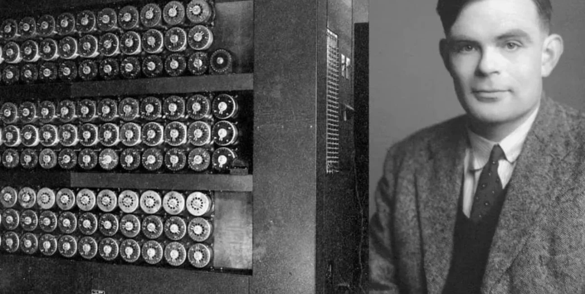
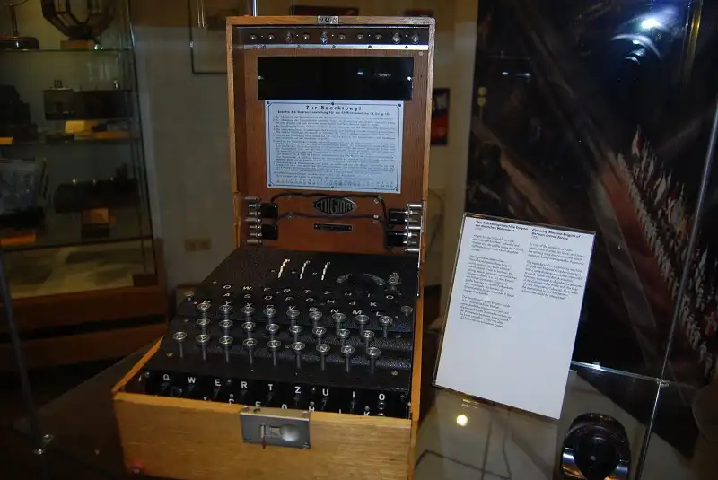

Vida de Alan Turing
Turing nació en Londres en 1912. Durante la Segunda Guerra Mundial, trabajó en Bletchley Park, donde desempeñó un papel fundamental en descifrar los códigos secretos nazis.

Alan Mathison Turing (1912-1954) fue un matemático, lógico, informático y criptógrafo británico. Fue una de las figuras más influyentes en el desarrollo de la informática y la inteligencia artificial.
Turing nació en Londres en 1912. Durante la Segunda Guerra Mundial, trabajó en Bletchley Park, donde desempeñó un papel fundamental en descifrar los códigos secretos nazis.
Entre sus logros destacados se encuentra la máquina de Turing, un modelo conceptual de una computadora que se considera la base de la computación moderna.
Turing también contribuyó al desarrollo de la inteligencia artificial y la teoría de la computación. Sus investigaciones sentaron las bases para la programación y la resolución de problemas algorítmicos.
